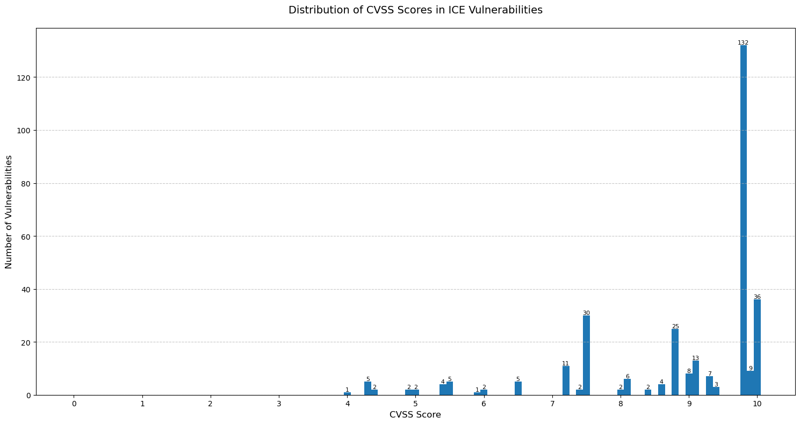
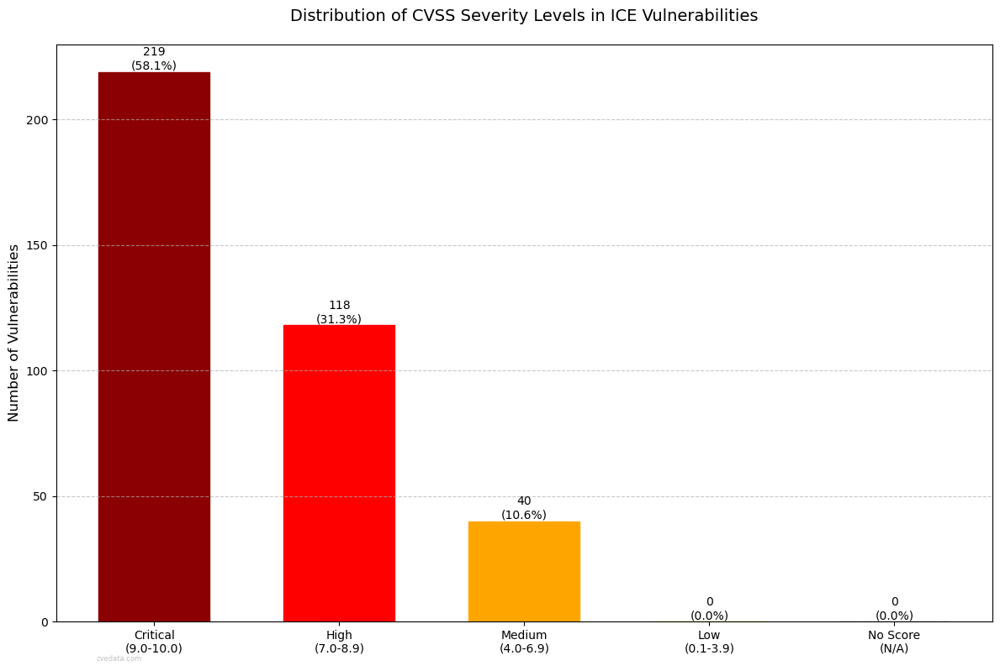
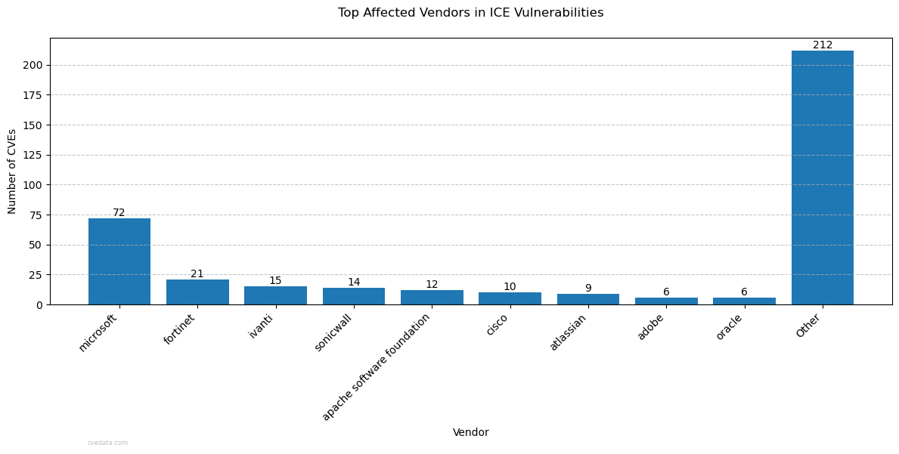
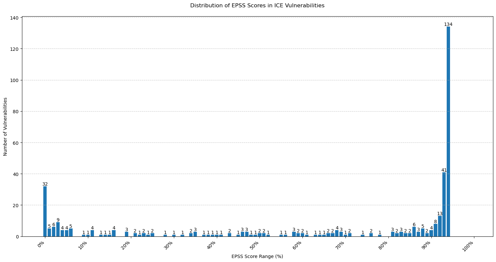
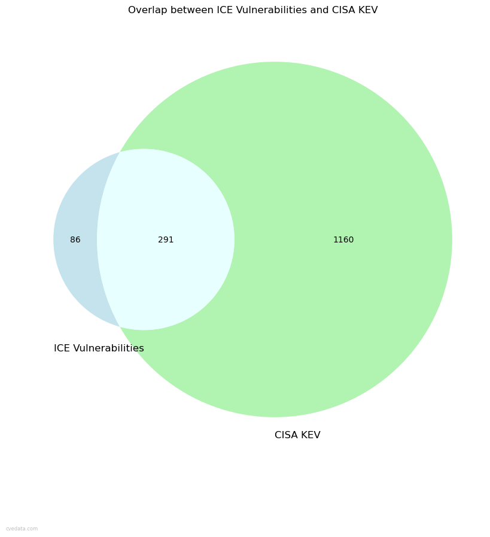
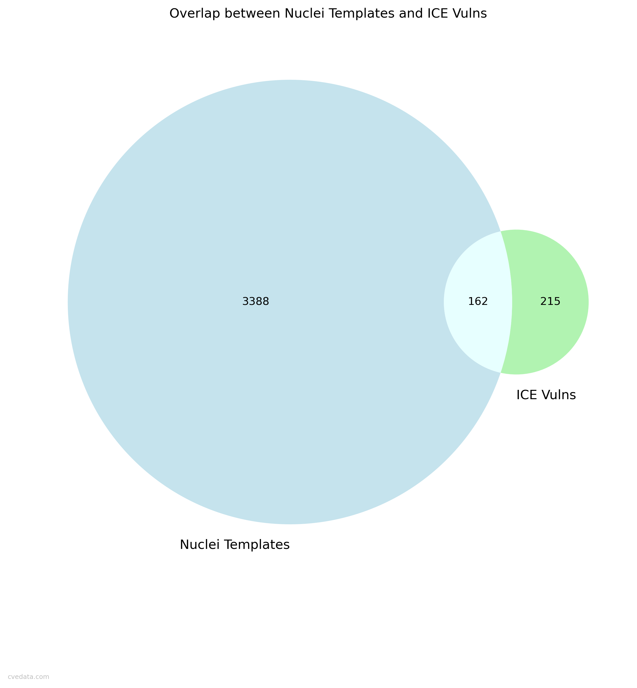
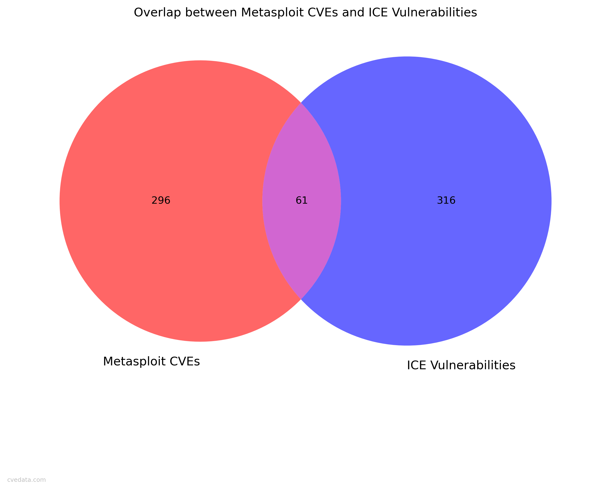

This report aims to provide a comprehensive analysis of:
Common Vulnerabilities and Exposures (CVE cvelistV5),
CISA Known Exploited Vulnerabilities (KEV),
CISA ADP (Vulnrichment),
Exploit Prediction Scoring System (EPSS),
VulnCheck (VulnCheck KEV),
KEVIntel (KEVIntel KEV),
National Vulnerability Database (NVD CVSS),
Metasploit (Metasploit),
Nuclei (Nuclei Templates),
and ICE data from Insurance carrier(s).
ICE vs EPSS Correlation
Shows the correlation between ICE and EPSS scores, providing insight into the relationship between the two. The further from perfect agreement the worse the correlation. Only scored vulnerabilities are included.
ICE CVSS Score Distribution

Shows the distribution of ICE CVSS scores, providing insight into the evolution of vulnerability scoring standards.
ICE CVSS Severity Distribution

Shows the distribution of ICE CVSS severity scores, providing insight into the evolution of vulnerability scoring standards.
ICE Vulns by Year
Shows the distribution of ICE vulnerabilities by year, providing insight into the evolution of vulnerability discovery and disclosure over time.
ICE Vendors Distribution

Shows the distribution of ICE vendors across all ICE vulns.
ICE EPSS Score Distribution

Shows the distribution of ICE EPSS scores, providing insight into the efficacy of ICE vs EPSS.
CISA KEV-ICE Overlap

Shows the overlap between KEV and ICE vulnerabilities.
VulnCheck KEV-ICE Overlap
Shows the overlap between VulnCheck KEV and ICE vulnerabilities.
ICE Verizon DBIR Overlap
Shows the overlap between ICE and Verizon DBIR vulnerabilities.
Vulncheck vs Verizon DBIR Overlap
Shows the overlap between Vulncheck KEV and Verizon DBIR vulnerabilities.
DBIR Year Distribution
Shows the distribution of DBIR CVEs by publication year.
DBIR-EPSS Correlation
Shows the correlation between DBIR and EPSS scores. The more right the better the correlation. Only scored vulnerabilities are included.
ICE-Nuclei Overlap

Shows the overlap between ICE and Nuclei templates.
Metasploit-ICE Overlap

Shows the overlap between Metasploit CVEs and ICE vulnerabilities.
KEVIntel-ICE Overlap
Shows the overlap between KEVIntel CVEs and ICE vulnerabilities.
Compiled by Robert "RSnake" Hansen. I do not guarantee the correctness of the data or images and further disclaim the reliability of the original data used or how it has been processed or represented in this report. Use your own judgement and do your own research. Use the charts with or without attribution (it's always appreciated), but if you do use it, please include me if you do any additional interesting research. Are you looking for the ISSA presentation I did on this? You can find it here.